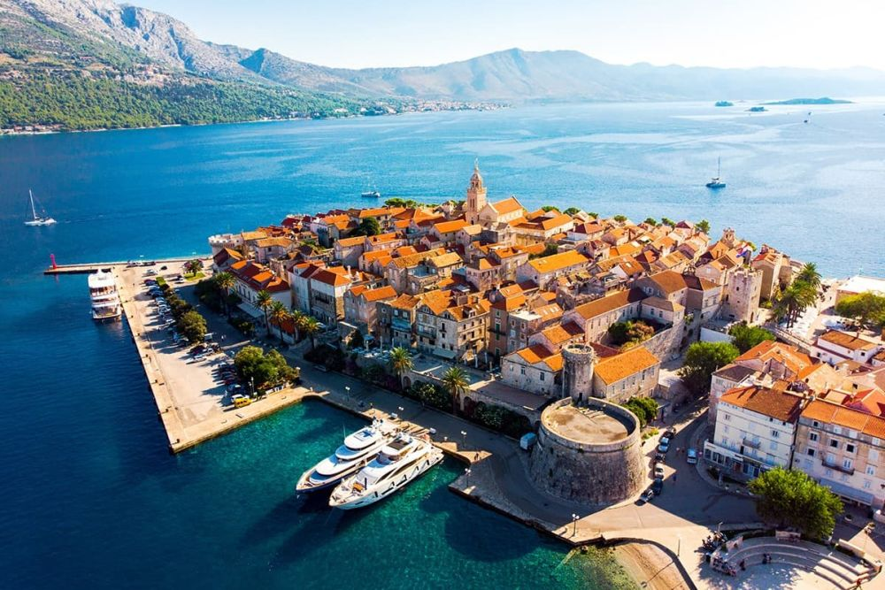

Descoperă insula Korčula - O călătorie în Croația
Insula Korčula oferă peisaje frumoase și atracții interesante pentru vizitatori:
-

Centrul vechi al orașului Korčula - Arhitectură medievală
Explorează străzile înguste și casele de piatră ale orașului Korčula, legendarul loc de naștere al lui Marco Polo.
-

Plajele din Korčula - Relaxare pe plajă
Bucurați-vă de apele cristaline și plajele variate ale insulei Korčula.
-

Vinurile din Korčula - Tradiția viticolă
Explorați podgoriile și degustați vinurile locale produse din strugurii autohtoni.
-

Livezile de măslini din Korčula - Cultura uleiului de măsline
Aflați mai multe despre producția de ulei de măsline și culturile tradiționale ale insulei.
-

Priveliști din Korčula - Peisaje pitorești
Înconjurați-vă de peisaje frumoase, de la dealuri până la coastele mării Adriatice.
Concluzii
Insula Korčula oferă o experiență autentică croată, cu bogății culturale și peisaje naturale impresionante.